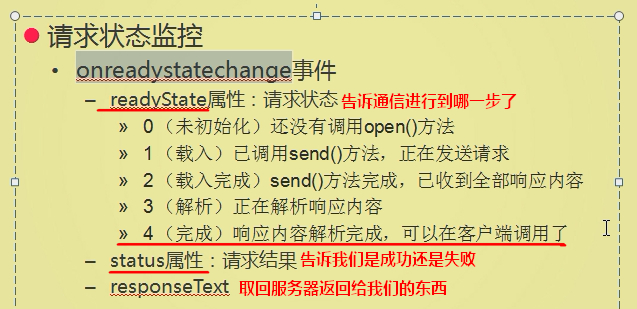

概念
Ajax（Asynchronous Javascript And XML）“异步Javascript和XML”。即使用JavaScript语言与服务器进行异步交互。Ajax最大的特点就是：当服务器响应时，不用刷新整个浏览器页面，通过局部刷新更新数据。
同步交互：客户端发出一个请求后，需要等待服务器响应结束后，才能发出第二个请求；
异步交互：客户端发出一个请求后，无需等待服务器响应结束后，就可以发出第二个请求。
原生js发送ajax请求
创建XHR（XMLHttpRequest）对象
适用于支持window.ActiveXObject的ie5和ie6等
适用于ie7+/firefoxf/chrome/safari/opera等
open
创建XMLHttpRequest后，通过open方法打开与服务器的连接。
send
对于get请求，参数设置为null。post请求，send()要带参数，还需要设置请求头;
接收响应
XMLHttpRequest对象有一个onreadystatechange事件，它会在XMLHttpRequest对象的状态发生变化时被调用。XMLHttpRequest对象的5种状态–readyState属性：
0:初始化未完成状态，只是创建了XMLHttpRequest对象，还未调用open()方法
1:请求已开始，open()方法已调用，但还没调用send()方法
2:请求发送完成状态，send()方法已调用
3:开始读取服务器响应
4:读取服务器状态响应结束

我们只关心第四种状态以及服务器响应的状态码200；
所以，我们把Ajax写成一个函数，方便以后使用：
jQuery实现ajax应用
使用load()方法异步请求数据
load(url,[data],[callback])
参数url为加载服务器地址
可选data参数指定请求所带的参数（字符串|对象|数组）；若指定为对象或者数组（键值对方式），则发起POST请求，若为字符串，则发起GET请求。
可选callback参数为数据请求成功后，执行的回调函数
load()使用
$.get/post
$.get(url,[callback])
$.post(url,[data],[callback])
参数url为服务器请求地址
可选项data为向服务器请求时发送的数据
可选项callback参数为请求成功后执行的回调函数
使用getJSON()方法异步加载JSON格式数据
$.getJSON(url,[data],[callback])
url参数为请求加载json格式文件的服务器地址
可选项data参数为请求时发送的数据
callback参数为数据请求成功后，执行的回调函数
$.ajax()
$.ajax([settings])
参数settings为发送ajax请求时的配置对象
在该对象中，url表示服务器请求的路径
data为请求时传递的数据
dataType为服务器返回的数据类型
success为请求成功的执行的回调函数
type为发送数据请求的方式，默认为get
ajaxStart()和ajaxStop()
ajaxStart()和ajaxStop()方法是绑定Ajax事件。ajaxStart()方法用于在Ajax请求发出前触发函数，ajaxStop()方法用于在Ajax请求完成后触发函数。
$(selector).ajaxStart(function(){})和$(selector).ajaxStop(function(){})
两个方法中括号都是绑定的函数，当发送Ajax请求前执行ajaxStart()方法绑定的函数，请求成功后，执行ajaxStop()方法绑定的函数。
例子：在调用ajax()方法请求服务器数据前，使用动画显示正在加载中，当请求成功后，该动画自动隐藏；